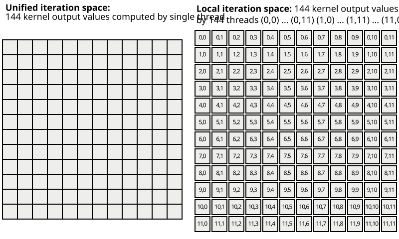

PyOP2 Kernels¶
Kernels in PyOP2 define the local operations that are to be performed for each
element of the iteration set the kernel is executed over. There must be a one
to one match between the arguments declared in the kernel signature and the
actual arguments passed to the parallel loop executing this kernel. As
described in PyOP2 Concepts, data is accessed directly on the iteration set
or via mappings passed in the par_loop() call.
The kernel only sees data corresponding to the current element of the
iteration set it is invoked for. Any data read by the kernel i.e. accessed as
READ, RW or INC is automatically
gathered via the mapping relationship in the staging in phase and the kernel
is passed pointers to the staging memory. Similarly, after the kernel has been
invoked, any modified data i.e. accessed as WRITE,
RW or INC is scattered back out via the
Map in the staging out phase. It is only safe for a kernel
to manipulate data in the way declared via the access descriptor in the
parallel loop call. Any modifications to an argument accessed read-only would
not be written back since the staging out phase is skipped for this argument.
Similarly, the result of reading an argument declared as write-only is
undefined since the data has not been staged in.
Kernel API¶
Consider a par_loop() computing the midpoint of a triangle given
the three vertex coordinates. Note that we make use of a covenience in the
PyOP2 syntax, which allow declaring an anonymous DataSet of a
dimension greater one by using the ** operator. We omit the actual data in
the declaration of the Map cell2vertex and
Dat coordinates.
vertices = op2.Set(num_vertices)
cells = op2.Set(num_cells)
cell2vertex = op2.Map(cells, vertices, 3, [...])
coordinates = op2.Dat(vertices ** 2, [...], dtype=float)
midpoints = op2.Dat(cells ** 2, dtype=float)
op2.par_loop(midpoint, cells,
midpoints(op2.WRITE),
coordinates(op2.READ, cell2vertex))
Kernels are implemented in a restricted subset of C99 and are declared by
passing a C code string and the kernel function name, which must match the
name in the C kernel signature, to the Kernel constructor:
midpoint = op2.Kernel("""
void midpoint(double p[2], double *coords[2]) {
p[0] = (coords[0][0] + coords[1][0] + coords[2][0]) / 3.0;
p[1] = (coords[0][1] + coords[1][1] + coords[2][1]) / 3.0;
}""", "midpoint")
Since kernels cannot return any value, the return type is always void. The
kernel argument p corresponds to the third par_loop()
argument midpoints and coords to the fourth argument coordinates
respectively. Argument names need not agree, the matching is by position.
Data types of kernel arguments must match the type of data passed to the
parallel loop. The Python types float and numpy.float64
correspond to a C double, numpy.float32 to a C
float, int or numpy.int64 to a C long and
numpy.int32 to a C int.
Direct par_loop() arguments such as midpoints are passed to
the kernel as a double *, indirect arguments such as coordinates as a
double ** with the first indirection due to the map and the second
indirection due the data dimension. The kernel signature above uses arrays
with explicit sizes to draw attention to the fact that these are known. We
could have interchangibly used a kernel signature with plain pointers:
void midpoint(double * p, double ** coords)
Argument creation supports an optional flag flatten, which is used
for kernels which expect data to be laid out by component:
midpoint = op2.Kernel("""
void midpoint(double p[2], double *coords[1]) {
p[0] = (coords[0][0] + coords[1][0] + coords[2][0]) / 3.0;
p[1] = (coords[3][0] + coords[4][0] + coords[5][0]) / 3.0;
}""", "midpoint")
op2.par_loop(midpoint, cells,
midpoints(op2.WRITE),
coordinates(op2.READ, cell2vertex, flatten=True))
Data layout¶
Data for a Dat declared on a Set is
stored contiguously for all elements of the set. For each element,
this is a contiguous chunk of data of a shape given by the
DataSet dim and the datatype of the
Dat. The size of this chunk is the product of the
extents of the dim tuple times the size of the datatype.
During execution of the par_loop(), the kernel is called
for each element of the iteration set and passed data for each of its
arguments corresponding to the current set element i only.
For a directly accessed argument such as midpoints above, the
kernel is passed a pointer to the beginning of the chunk of data for
the element i the kernel is currently called for. In CUDA/OpenCL
i is the global thread id since the kernel is launched in parallel
for all elements.
For an indirectly accessed argument such as coordinates above,
PyOP2 gathers pointers to the data via the Map
cell2vertex used for the indirection. The kernel is passed a list
of pointers of length corresponding to the arity of the
Map, in the example above 3. Each of these points to
the data chunk for the element in the target Set given
by Map entries (i, 0), (i, 1) and (i, 2).
If the argument is created with the keyword argument flatten set
to True, a flattened vector of pointers is passed to the kernel.
This vector is of length dim * arity (where dim is the product
of the extents of the dim tuple), which is 6 in the example above.
Each entry points to a single data value of the Dat.
The ordering is by component of dim i.e. the first component of
each data item for each element in the target set pointed to by the
map followed by the second component etc.
Local iteration spaces¶
PyOP2 supports complex kernels with large local working set sizes, which may not run very efficiently on architectures with a limited amount of registers and on-chip resources. In many cases the resource usage is proportional to the size of the local iteration space the kernel operates on.
Consider a finite-element local assembly kernel for vector-valued basis functions of second order on triangles. There are kernels more complex and computing considerably larger local tensors commonly found in finite-element computations, in particular for higher-order basis functions, and this kernel only serves to illustrate the concept. For each element in the iteration set, this kernel computes a 12x12 local tensor:
void kernel(double A[12][12], ...) {
...
// loops over the local iteration space
for (int j = 0; j < 12; j++) {
for (int k = 0; k < 12; k++) {
A[j][k] += ...
}
}
}
PyOP2 invokes this kernel for each element in the iteration set:
for (int ele = 0; ele < nele; ++ele) {
double A[12][12];
...
kernel(A, ...);
}
To improve the efficiency of executing complex kernels on manycore platforms, their operation can be distributed among several threads which each compute a single point in this local iteration space to increase the level of parallelism and to lower the amount of resources required per thread. In the case of the kernel above we obtain:
void mass(double A[1][1], ..., int j, int k) {
...
A[0][0] += ...
}
Note how the doubly nested loop over basis function is hoisted out of the
kernel, which receives its position in the local iteration space to compute as
additional arguments j and k. PyOP2 then calls the kernel for
each element of the local iteration space for each set element:
for (int ele = 0; ele < nele; ++ele) {
double A[1][1];
...
for (int j = 0; j < 12; j++) {
for (int k = 0; k < 12; k++) {
kernel(A, ..., j, k);
}
}
}
On manycore platforms, the local iteration space does not translate into a loop nest, but rather into a larger number of threads being launched to compute each of its elements:

Local iteration space for a kernel computing a 12x12 local tensor¶
PyOP2 needs to be told to loop over this local iteration space by
indexing the corresponding maps with an
IterationIndex i in the
par_loop() call.